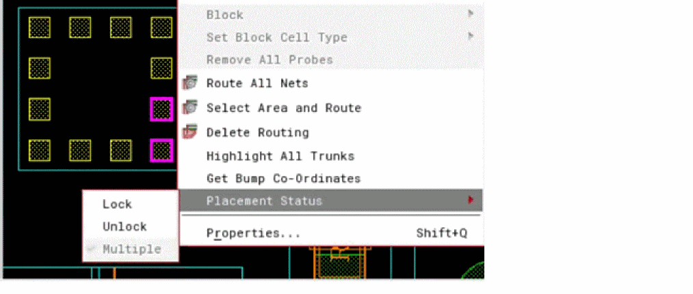

Placement Status of IOs
You can view or set the placement status of IOs as Lock or Unlock using the Placement Status menu item. The menu item appears in the context menu when you select an IO or an instance. If the selected IO is locked, the Lock option appears selected in the sub-menu. Similarly, the Unlock option appears selected if the selected IO is unlocked. If both locked and unlocked IOs are selected in a layout when selecting an instance, the Multiple option appears selected but this is a view-only option. You cannot set this option for IOs.

Return to top